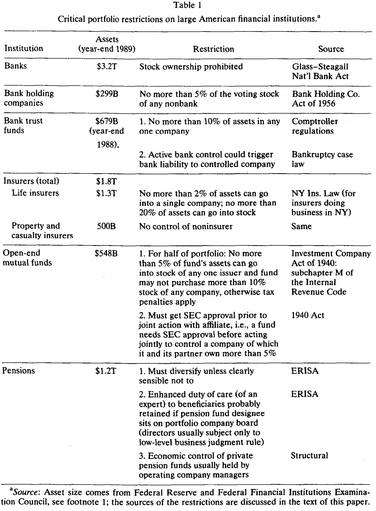
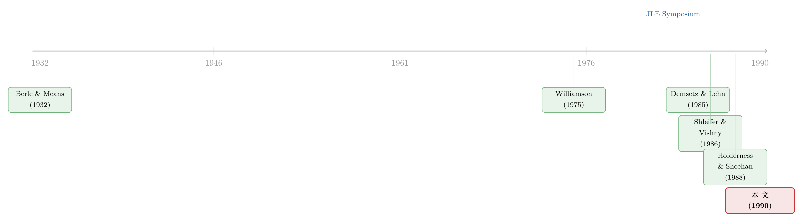

全美最大的钱袋子，凭什么不能当老板？
本文读的是 Roe (1990, Journal of Financial Economics)：我们习以为常的「股权分散、所有权与控制权分离」的美国大公司，也许并不是市场竞争筛选出的最优形态，而是政治与法律亲手「修剪」出来的结果。银行被禁止持股，共同基金、保险公司、养老金被一道道组合限制困住——它们手里攥着几万亿美元，却被法律挡在了控制权的门外。而这些规则的源头，与其说是经济效率，不如说是 Main Street 对 Wall Street 的不信任。
1 引言：一个被「效率」盖住的问题
谈起现代公司，几乎所有人都会想到 Berle 和 Means 在 1932 年写下的那句经典论断：企业越做越大，需要从千千万万分散的股东那里筹集资本，于是所有权与控制权 (separation of ownership and control) 被劈成了两半——钱归股东，权归经理。这之后的半个多世纪，公司金融的主流叙事一直是「效率」二字：我们今天看到的这种公司形态之所以能活下来，是因为它在应对监督成本与代理问题 (agency problems) 时表现最好，是被市场竞争一轮轮筛选出来的「最适者」。几年前那场围绕 Berle 和 Means 的研讨会 [Journal of Law and Economics (1983)]，弥漫的就是这种气息。
但 Roe 在这篇文章里，偏偏要把这个叙事掀开一道缝。他问的问题简单到近乎冒犯：如果是政治，而不是效率，切断了某些演化路径呢？ 如果美国公司之所以长成今天这副「股权高度分散、机构投资者袖手旁观」的模样，仅仅是因为别的形态被法律提前掐死了呢？那么「我们是否拥有最有效率的公司制度」这个问题，就不再是一句不证自明的断言，而成了一个需要认真追究的疑案。
这就是全文反复要讲透的一个核心：美国公众公司是一种政治适应（political adaptation），其程度也许不亚于它是一种经济或技术上的必然。
2 谁手里有钱？—— 一个被忽略的反事实
要证明「政治塑造了公司」，Roe 的论证分两步走。第一步，他要先让你看见一个反事实：金融机构其实完全有能力去当大公司的主人。
数字摆在那里。截至 1989 年底，美国四类主要金融机构的金融资产分别是：银行 $3.2 万亿、共同基金 $548 亿、保险公司 $1.8 万亿、养老金 $1.2 万亿。再加上州养老金的 $721 亿，这六类机构握着金融中介体系里整整 90% 的资产。
换句话说，钱是足够的。在 1971 年那份著名的《机构投资者研究报告》(Institutional Investor Study) 里，SEC 自己就承认：对许多大公司而言，只要几家机构联手，就能凑出一个有影响力的控制性股权。
那么，为什么它们不这么做？德国的银行可以稳坐工业公司的董事会，日本的财团 (keiretsu) 里主办银行说一不二，而大洋彼岸同样财大气粗的美国机构，却集体保持着一种近乎反常的「被动」。Roe 给出的答案干净利落：不是它们不想，而是法律不让。 论证的第二步，就是把这道道法律闸门逐一拆开看。
3 四道闸门：法律如何把大资本「打散」
让我们顺着钱的来路，一类一类地看。
首先是银行。 银行掌握着可投资金融资产的一半，是体量最大的一类机构。可偏偏对它，几乎不用费口舌——美国银行被直接禁止持有股票。这道分离从 1863 年的《国民银行法》(National Bank Act) 就开始了，最高法院后来又把「银行能否间接通过持股染指实业」的口子彻底堵死。1933 年的《格拉斯-斯蒂格尔法》(Glass-Steagall Act) 再把商业银行与投资银行劈开，禁止银行的附属机构持有和交易证券。银行与股权唯一剩下的直接联系是信托部门，可一条规则又把它捆住：任何单一公司的股票，不得超过银行信托资金的 10%。
接着，一个自然的问题是：银行不行，那能不能用控股公司的形式绕过去？ 不行。1956 年的《银行控股公司法》(Bank Holding Company Act) 规定，控股公司持有任何非银行企业的有投票权股票不得超过 5%；想多持也可以，最高到 25%，但多出来的那部分必须是无投票权股 [Heller (1989)]。投票权——也就是控制权——被精准地锁死在了门外。
然后是共同基金。 这里的设计更微妙，它用的是税法。基金若想把收益免税地「穿透」给持有人，就必须满足《1940 年投资公司法》(Investment Company Act of 1940) 和税法 subchapter M 定义的「分散」标准：至少一半的资产，要投在「单一公司不超过组合 5%、且不超过该公司在外股票 10%」的标的上；另一半里，单一公司也不能超过 25%。一旦基金想把组合集中到三四只股票上去搞监督，免税通道立刻关闭，迎接它的是三重征税——股息的有效税率约 10%，资本利得高达 34%，再到分给持有人时又按普通税率征一遍。这笔惩罚之重，足以劝退任何一只「想当监督者」的基金。请注意，法律意义上的「分散」和商学院里教的根本不是一回事:金融学告诉你前十五只股票就能拿到几乎全部分散化收益，可法律偏要你撒到几百家公司里去。这是一种远超经济需要的「超额分散」。
再看保险公司。 1906 年纽约州一纸禁令，曾让寿险公司完全不能买股票（当时全行业过半资产都在纽约）。今天虽然松了口——寿险公司可把 20% 的资产或一半盈余投入股票——但 New York Ins. Law 仍卡死一条:投入任何单一发行人的资金不得超过总资产的 2%。而纽约的法律管着全美寿险业 58%、财产险业 82% 的资产，加州、伊利诺伊、得州也都有类似规定。
最后是最年轻的养老金。 1974 年的《雇员退休收入保障法》(ERISA) 要求基金必须分散，只有在「明显审慎」时才能例外。更要命的是结构性约束:私人养老金通常由用人公司的管理层实际控制——你能想象通用汽车的养老金经理跑去对另一家公司的经理人指手画脚，回过头来却要面对自家老板的怒火吗？
四道闸门，四种机制，殊途同归。这张表把它们一网打尽：

Table 1
4 为什么连「抱团」也不行？
读到这里，聪明的读者一定会反问：单打独斗不行，那几家机构联起手来总可以吧？Roe 早料到了这一招，他指出联合行动会撞上四堵墙。
第一是组织的脆弱性。 正如 Coase (1988) 提醒我们的，我们其实并不真正理解为什么有些组织能成、有些会败，但这个选择本身至关重要。多个独立机构要协同，就要付出协调成本、要应对彼此的猜忌、要解决控制不住的代理问题。
第二是监管成本，这是最硬的一堵墙。 一旦形成持股 5% 的「股东集团」，就必须申报其计划、持股与资金来源（《1934 年证券交易法》第 13 条）。一旦集团成员之间为协同而沟通，就可能被认定为「委托书征集」，要走第 14 条的繁琐程序。而更让机构忌惮的是第 16(b) 条:持股超 10% 的股东，其六个月内的「短线交易」利润必须全数吐出，无论是否基于内幕信息。对一个打算长期持有的单一投资者，这无所谓；可对一个集团，麻烦就来了——如果另一个成员在某人买入后六个月内卖出，算不算触发 16(b)？算谁的？这种不确定性，加上机构本就珍视的流动性，让「抱团控制」变得既危险又昂贵。
第三是恐惧与社会约束。 机构投资者历史上一直担心，主动介入管理会招来更严厉的政治管制。SEC 在 1971 年的报告里写得明白：机构们「似乎相信，参与（控制）可能是非法的或不道德的……这种担忧其实可能是政治性的」。
第四是交易的考量。 一些机构靠交易获利，而大额持股加上控制人身份，会触发证券法对再出售的注册要求，把它们「锁」在投资里动弹不得。
于是反转出现了:不是市场选择了分散，而是法律的层层设计，让「集中」这条路在经济上变得无利可图、在法律上变得寸步难行。
5 政治的起源 —— Main Street 不想被 Wall Street 管
那么，这些规则又是从哪里来的？这才是 Roe 真正想落脚的地方。他不认为这些规则全是「不受政治干扰的睿智监管者」会得出的结论。恰恰相反，许多重要规则压根塞不进那个「公共利益」的模子里。
民意调查显示出公众对积聚了权力的大型金融机构的深刻不信任，政治家则回应了这种情绪。Roe 引用了一段极具画面感的史料:SEC 早年的主席 Douglas 曾对着一群华尔街投资银行家放话——银行家将被限制在承销和销售的范围内，他过去对工业政策施加的金融权力，「将转入他人之手」[Douglas (1940)，转录其 1937 年那场让听众目瞪口呆的演讲]。
1934 年的 Pecora 报告把「投资」与「控制」两种职能硬生生切开，宣称投资公司只该做前者，混合二者的只有「不择手段的金融家」。1968 年的 Patman 报告则警告银行信托部门权力膨胀——紧随其后，那条 10% 的信托持股限制就落了地。Roe 把推动这些规则的力量归结为几股:一种相信「金融分散能带来稳定」的公共精神信念、美国式的联邦主义（每个州都造出自己一套封闭的金融机构）、金融机构集团之间的相互倾轧，以及那股始终存在的、对私人金融权力集中的民间不信任。一言以蔽之:Main Street 不想被 Wall Street 控制，国会回应的是 Main Street。
更妙的是最后一层:这些规则为什么能如此稳定地存续？因为正如人们所预料的，公司经理人和那些从规则中受益的金融机构，会对任何改变它的企图，提供顽强的政治抵抗。规则一旦写就，就长出了自我维持的生命。
（关于「政治如何塑造一国的金融体系」这条大线索，可参见《金融发展会「倒退」吗？——一段被遗忘的二十世纪金融史》；而把「法律对投资者的保护程度」当作股市发育的根因来看，则可参见《把法律写成一个「被抓的概率」：投资者保护如何长出一国的股市》。）
6 文献脉络
这篇文章站在一个有趣的十字路口上。
往上游追，源头自然是 Berle 和 Means (1932) ——是他们第一次把「所有权与控制权分离」刻进了公司研究的底色。此后很长一段时间，主流是「效率/契约」视角:Williamson (1975) 的市场与科层、以及 1983 年那场 Journal of Law and Economics 研讨会，都倾向于把我们观察到的公司形态解释为应对代理问题的最优解。

与此同时，另一条线在追问「大股东到底有没有用」:Demsetz 和 Lehn (1985) 研究所有权结构的成因与后果，Shleifer 和 Vishny (1986) 论证大股东能缓解搭便车的监督难题，Holderness 和 Sheehan (1988) 考察了上市公司里的多数股东，Wruck (1989) 则发现股权集中与公司价值相关，Morck、Shleifer 和 Vishny (1988) 给出了管理层持股与市场估值的经验分析。这些研究都隐含一个前提:大股东监督是有价值的。
Roe 的论文恰恰嵌在这两条线的张力之间——既然大股东监督有价值（第二条线），为什么美国偏偏长不出这样的大股东（第一条线说那是效率使然）？他的回答是:不是效率，是政治与法律。这就把「比较公司治理」的问题，从纯经济学推向了政治经济学。后来对德国、欧洲所有权结构的大量研究，正是沿着这条路走下去的（关于这一点，可参见《股权最集中的德国，治理却和英美一样平淡——直到你看它的『动态』》，以及《谁才是这家公司真正的主人？——把欧洲 5232 家公司的控制权一层层剥到底》）。
7 评论与延伸（Q&A + 研究方向）
(a) 几个可能的疑问
Q：这篇文章没有回归、没有 t 值，凭什么发在 JFE？它的「识别」是什么？
它确实不是一篇实证论文，而是一篇制度—法律—政治经济学的论证性文章。它的「识别」是反事实推理:先用资产数据证明机构有能力控制（
90%的中介资产集中在六类机构手里），再用法条逐一证明控制被系统性地抬高了成本，最后用立法史料把规则的起源归于政治。它不主张因果系数，而主张一种叙事的可信性——而这恰恰是它的脆弱处，见下一问。
Q：把「美国公司分散」归因于政治，会不会本身就是一种无法证伪的故事？
这是最该警惕的地方。「效率论」和「政治论」都能事后解释同一个均衡:你看到机构被动，效率论说「因为被动最优」，政治论说「因为法律不让主动」。要真正分开它们，需要外生的法律变动或跨国比较。Roe 这篇文章本身没有提供这种检验，它更像是为后续的比较研究和准自然实验「立靶子」。
Q：那德国、日本的银行能控股，是不是就直接证明了美国是政治产物？
跨国差异确实是有力的旁证——同样的技术、同样的资本需求，制度安排却南辕北辙，这很难只用「效率」解释。但跨国比较也有内生性:各国的法律本身也是各自政治、文化、历史的产物，无法简单地把德国当成「没有美国式管制」的对照组。
Q：这些限制就一定是坏事吗？金融分散难道没有稳定性上的好处？
Roe 承认许多规则有「公共精神」的支持者，金融分散在某些时候确实可能促进稳定。他的主张不是「这些规则一定低效」，而是更弱也更扎实的一条:它们的存在和稳定，无法仅用效率来解释，政治是不可或缺的一环。是否低效，是个有待追究的开放问题。
Q：16(b) 这种「短线利润吐出」的规则，真的能挡住机构控制吗？看上去只是个交易约束。
单看一条不致命，致命的是叠加效应。13/14/16(b) 加上委托书规则、控制人连带责任、再出售注册要求，再叠上免税穿透的税法门槛，每一道都不高，但合起来就把「集中持股+主动控制」这条路的预期成本推到了得不偿失。这正是文章的精髓:不是一禁了之，而是用无数道「楔子」让它自然枯萎。
Q：三十多年过去了，这套约束还成立吗？
文章末尾自己就指出，Glass-Steagall 对银行承销和证券附属机构的限制当时已在松动（但对银行持股本身仍稳定）。后续 Glass-Steagall 在 1999 年被基本废除，机构投资者（尤其指数基金巨头）的持股集中度也今非昔比。这反而让 Roe 的框架更有价值——它提供了一把尺子，去衡量「政治约束松动后，治理结构如何随之漂移」。
(b) 几个可能的研究问题与提案
1. 外资持有人作为「绕过本土政治约束」的通道。 - 【经济故事】既然美国法律压制本土机构的控制性持股，那么不受同样约束的外国机构投资者，会不会成为美国大公司里相对活跃的大股东？外资的「政治豁免」可能让它们承担起本土机构被禁止承担的监督角色。 - 【可行性】中。可用 13F、13D/G 申报区分本土与外资大额持股，结合监管事件（如 Glass-Steagall 废除）做前后对比。难点在于把「外资身份」与「机构类型/规模」的混淆项剥离干净。
2. 公司债市场:债权人控制是否填补了股权控制的真空？ - 【经济故事】如果法律压住了股权侧的集中监督，企业的相机治理是否更多地落到了债权人手里——尤其在财务困境时？美国「分散股权 + 强债权人控制权」的组合，可能正是政治塑造的另一面。 - 【可行性】中高。可用银团贷款契约、债券契约条款 (covenants)、违约/重组事件，考察控制权在违约前后向债权人的转移强度，并与德日等「银行控制」体系对照。数据（DealScan、Mergent FISD）较成熟。
3. 机构持股集中度与公司债流动性。 - 【经济故事】当法律约束松动、机构持股变得更集中，这些「黏性」的大持有人会如何影响所对应公司债的二级市场流动性？集中持有可能既带来监督红利，也带来「火线甩卖」时的流动性脆弱。 - 【可行性】高。TRACE 提供成交级的公司债流动性度量，机构持有可由保险公司 NAIC、共同基金持仓拼出。识别上可借助指数纳入/剔除等需求冲击。
4. 用立法时点做「政治约束」的准自然实验。 - 【经济故事】Roe 把规则的起源归于政治。能否反过来，用某次明确的去管制事件（如某类机构持股上限的放宽），检验「约束放松 → 持股集中度上升 → 治理/估值变化」这条链？ - 【可行性】中。关键在于找到足够外生、且只影响某一类机构的法律变动，用 双重差分 (difference-in-differences, DiD) 比较受影响与不受影响的机构所持公司。挑战是这类立法往往是内生于行业游说的——而这恰恰又印证了 Roe 的论点本身。
我的判断
这篇文章的贡献，不在于任何一个新数字，而在于它重置了问题:它把「美国公司为什么长这样」从一道经济效率题，改写成了一道政治经济学题。在一个被「效率/契约」叙事主导的年代，敢于说「也许是政治切断了别的路」，这本身就是一种智识上的勇气，而且它后来被证明极具生命力——整条「法律与金融」「比较公司治理」的研究脉络，都能在这里找到精神源头。
但它的软肋也很清楚:全文的论证是叙事性的，缺乏能把「政治论」与「效率论」干净分开的识别设计。两套理论对同一个均衡都能自圆其说，而文章本身没有提供裁决二者的外生变动。它更像是一份纲领、一张靶子，而不是一个判决。
我最想看到的后续，是把这套定性框架「实证化」:用机构持股上限放宽、Glass-Steagall 废除这类离散的法律冲击，去检验「政治约束 → 持股结构 → 公司治理与估值」这条因果链到底有多强。如果约束一松，集中持股和主动监督就如约出现，那 Roe 就赢了一大半;如果没有，那「效率论」就还有话要说。这场三十多年前埋下的争论，其实远未结案。
参考文献
Berle, A. and G. Means (1932). The Modern Corporation and Private Property. Macmillan.
Coase, R. (1988). The Firm, the Market, and the Law. University of Chicago Press.
Demsetz, H. and K. Lehn (1985). The structure of corporate ownership: Causes and consequences. Journal of Political Economy 93, 1155.
Douglas, W. O. (1940). Democracy and Finance. Yale University Press.
Heller, P. (1989). Federal Bank Holding Company Law. Law Journal Seminars Press.
Holderness, C. and D. Sheehan (1988). The role of majority shareholders in publicly held corporations. Journal of Financial Economics 20, 317.
Jensen, M. (1989). Eclipse of the public corporation. Harvard Business Review, Sept.–Oct., 61.
Longstreth, B. (1986). Modern Investment Management and the Prudent Man Rule. Oxford University Press.
Morck, R., A. Shleifer, and R. Vishny (1988). Management ownership and market valuation: An empirical analysis. Journal of Financial Economics 20, 293.
Roe, M. (1990). A political theory of American corporate finance. Working paper.
Shleifer, A. and R. Vishny (1986). Large shareholders and corporate control. Journal of Political Economy 94, 461.
Williamson, O. (1975). Markets and Hierarchies. The Free Press.
Wruck, K. (1989). Equity ownership concentration and firm value. Journal of Financial Economics 23, 3.